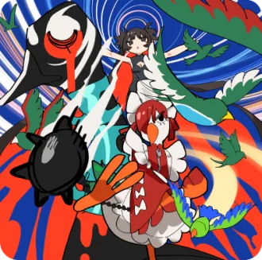
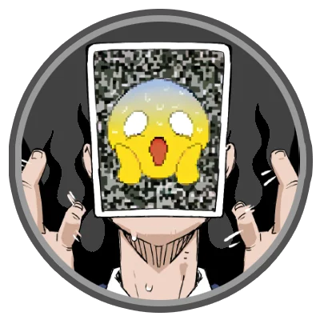
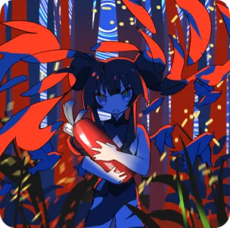
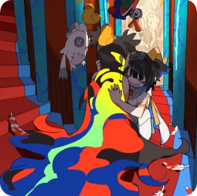
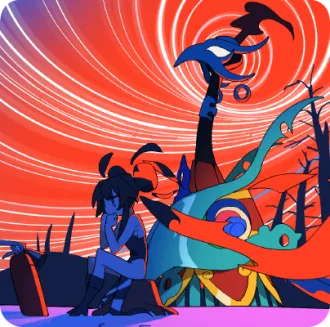
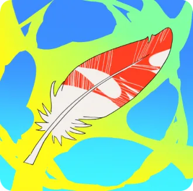
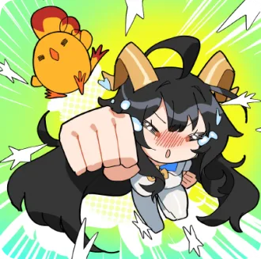

园林中庭
隆兴饭店坐落于凰区最繁华的‘天华街’。整条街长达数公里，汇聚了全联合城最顶级的餐饮、娱乐与购物综合体。但即使在寸土寸金的地段，隆兴饭店仍以规模宏大著称——其餐饮区域宽敞，甚至设有独立中庭，顾客在用餐后可在中庭散步、观赏。饭店…
地图背景
隆兴饭店坐落于凰区最繁华的‘天华街’。整条街长达数公里，汇聚了全联合城最顶级的餐饮、娱乐与购物综合体。但即使在寸土寸金的地段，隆兴饭店仍以规模宏大著称——其餐饮区域宽敞，甚至设有独立中庭，顾客在用餐后可在中庭散步、观赏。饭店右侧为酒店，左侧则是制作糕点的快餐店。
地图剧情
铜盏孔雀试炼
与凤争风


 与凤争风
与凤争风
刷新1个铜盏孔雀，2个迎宾燕
孔雀之舞
孔雀之舞
孔雀之舞
姬梦枫（孔雀意识）登场，刷新1个铜盏仙鹤。所有怪物攻击力＋1,防御力＋1
无彩
无彩
无彩
刷新1个铜盏孔雀，1个铜盏仙鹤。所有怪物攻击力＋1,防御力＋1
与凤争风
与凤争风
刷新1个铜盏孔雀，2个迎宾燕
孔雀之舞
孔雀之舞
孔雀之舞
姬梦枫（孔雀意识）登场，刷新1个铜盏仙鹤。所有怪物攻击力＋1,防御力＋1
无彩
无彩
无彩
刷新1个铜盏孔雀，1个铜盏仙鹤。所有怪物攻击力＋1,防御力＋1


任务 击倒家禽服务员0\1 进入铜盏孔雀试炼 击倒迎宾燕0\3 所有角色获得 强化筹码*1 击倒铜盏仙鹤0\2 所有玩家获得 强化筹码*1 击倒铜盏孔雀0\1 所有玩家获得 强化筹码*1 进入姬梦枫的内心 击倒铜盏孔雀0\2 所有玩家获得 强化筹码*1 战胜姬梦枫（孔雀意识）0\1 姬梦枫解放

百鸟与凤 百鸟与凤 收集凤凰的力量 23456

百鸟冲击
百鸟冲击 刷新2个迎宾燕，2个铜盏仙鹤。所有怪物攻击力＋1,防御力＋1 891011121314151617

任务 击倒家禽服务员0\1 进入铜盏孔雀试炼 击倒迎宾燕0\3 所有角色获得 强化筹码*1 击倒铜盏仙鹤0\2 所有玩家获得 强化筹码*1 击倒铜盏孔雀0\1 所有玩家获得 强化筹码*1 进入姬梦枫的内心 击倒铜盏孔雀0\2 所有玩家获得 强化筹码*1 战胜姬梦枫（孔雀意识）0\1 姬梦枫解放 百鸟与凤
百鸟与凤 收集凤凰的力量 23456 百鸟冲击
百鸟冲击 刷新2个迎宾燕，2个铜盏仙鹤。所有怪物攻击力＋1,防御力＋1 891011121314151617

任务 击倒家禽服务员0\1 进入铜盏孔雀试炼 击倒迎宾燕0\3 所有角色获得 强化筹码*1 击倒铜盏仙鹤0\2 所有玩家获得 强化筹码*1 击倒铜盏孔雀0\1 所有玩家获得 强化筹码*1 进入姬梦枫的内心 击倒铜盏孔雀0\2 所有玩家获得 强化筹码*1 战胜姬梦枫（孔雀意识）0\1 姬梦枫解放 百鸟与凤
百鸟与凤 收集凤凰的力量 23456 百鸟冲击
百鸟冲击 刷新2个迎宾燕，2个铜盏仙鹤。所有怪物攻击力＋1,防御力＋1 8910111213141516

任务 击倒家禽服务员0\1 进入铜盏孔雀试炼 击倒迎宾燕0\3 所有角色获得 强化筹码*1 击倒铜盏仙鹤0\2 所有玩家获得 强化筹码*1 击倒铜盏孔雀0\1 所有玩家获得 强化筹码*1 进入姬梦枫的内心 击倒铜盏孔雀0\2 所有玩家获得 强化筹码*1 战胜姬梦枫（孔雀意识）0\1 姬梦枫解放 百鸟与凤
百鸟与凤 收集凤凰的力量 23456 百鸟冲击
百鸟冲击 刷新2个迎宾燕，2个铜盏仙鹤。所有怪物攻击力＋1,防御力＋1 8910111213141516
铜盏鸳鸯试炼
鸳鸯比翼
鸳鸯比翼
鸳鸯比翼
刷新2个铜盏鸳鸯，2个迎宾燕
鸳之绊
鸳之绊
鸳之绊
姬梦枫（鸳鸯意识）登场，刷新1个铜盏仙鹤。所有怪物攻击力＋1,防御力＋1
华彩
华彩
华彩
刷新2个铜盏鸳鸯，1个铜盏仙鹤。所有怪物攻击力＋1,防御力＋1 任务 收集2个神秘的蛋0\2 进入铜盏鸳鸯试炼 击倒迎宾燕0\3 所有角色获得 强化筹码*1 击倒铜盏仙鹤0\2 所有玩家获得 强化筹码*1 击倒铜盏鸳鸯0\2 所有玩家获得 强化筹码*1 进入姬梦枫的内心 击倒铜盏鸳鸯0\4 所有玩家获得 强化筹码*1 战胜姬梦枫（鸳鸯意识）0\1 姬梦枫解放 百鸟与凤
百鸟与凤 收集凤凰的力量 23456 百鸟冲击
百鸟冲击 刷新2个迎宾燕，2个铜盏仙鹤。所有怪物攻击力＋1,防御力＋1 891011121314151617 任务 收集2个神秘的蛋0\2 进入铜盏鸳鸯试炼 击倒迎宾燕0\3 所有角色获得 强化筹码*1 击倒铜盏仙鹤0\2 所有玩家获得 强化筹码*1 击倒铜盏鸳鸯0\2 所有玩家获得 强化筹码*1 进入姬梦枫的内心 击倒铜盏鸳鸯0\4 所有玩家获得 强化筹码*1 战胜姬梦枫（鸳鸯意识）0\1 姬梦枫解放 百鸟与凤
百鸟与凤 收集凤凰的力量 23456 百鸟冲击
百鸟冲击 刷新2个迎宾燕，2个铜盏仙鹤。所有怪物攻击力＋1,防御力＋1 891011121314151617 任务 收集2个神秘的蛋0\2 进入铜盏鸳鸯试炼 击倒迎宾燕0\3 所有角色获得 强化筹码*1 击倒铜盏仙鹤0\2 所有玩家获得 强化筹码*1 击倒铜盏鸳鸯0\2 所有玩家获得 强化筹码*1 进入姬梦枫的内心 击倒铜盏鸳鸯0\4 所有玩家获得 强化筹码*1 战胜姬梦枫（鸳鸯意识）0\1 姬梦枫解放 百鸟与凤
百鸟与凤 收集凤凰的力量 23456 百鸟冲击
百鸟冲击 刷新2个迎宾燕，2个铜盏仙鹤。所有怪物攻击力＋1,防御力＋1 8910111213141516 任务 收集2个神秘的蛋0\2 进入铜盏鸳鸯试炼 击倒迎宾燕0\3 所有角色获得 强化筹码*1 击倒铜盏仙鹤0\2 所有玩家获得 强化筹码*1 击倒铜盏鸳鸯0\2 所有玩家获得 强化筹码*1 进入姬梦枫的内心 击倒铜盏鸳鸯0\4 所有玩家获得 强化筹码*1 战胜姬梦枫（鸳鸯意识）0\1 姬梦枫解放 百鸟与凤
百鸟与凤 收集凤凰的力量 23456 百鸟冲击
百鸟冲击 刷新2个迎宾燕，2个铜盏仙鹤。所有怪物攻击力＋1,防御力＋1 8910111213141516


失控凤凰
进入方式：
- 在同一回合完成“击倒家禽服务员”与“收集2个神秘的蛋”两个任务后，在回合结束时选择“献上一切”；
- 或是在完成其中一个任务的回合结束时，选择“深入调查”，完成另一任务后即可进入该路线。
全面失控
全面失控
全面失控
失控凤凰登场，刷新1个铜盏孔雀，2个迎宾燕
绚烂华彩
绚烂华彩
绚烂华彩
刷新2个铜盏鸳鸯
最终试炼
最终试炼
最终试炼
刷新1个铜盏孔雀，1个铜盏鸳鸯。所有怪物防御力＋1 任务 击倒家禽服务员0\1 进入铜盏孔雀试炼 收集2个神秘的蛋0\2 进入铜盏鸳鸯试炼 击倒迎宾燕0\3 所有角色获得 强化筹码*1 击倒铜盏仙鹤0\2 所有玩家获得 强化筹码*1 击倒铜盏孔雀0\1 所有玩家获得 强化筹码*1 击倒铜盏鸳鸯0\2 所有玩家获得 强化筹码*1 战胜失控凤凰0\1 姬梦枫解放 百鸟与凤
百鸟与凤 收集凤凰的力量 23456 百鸟冲击
百鸟冲击 刷新2个迎宾燕，2个铜盏仙鹤。所有怪物攻击力＋1,防御力＋1 891011121314151617 任务 击倒家禽服务员0\1 进入铜盏孔雀试炼 收集2个神秘的蛋0\2 进入铜盏鸳鸯试炼 击倒迎宾燕0\3 所有角色获得 强化筹码*1 击倒铜盏仙鹤0\2 所有玩家获得 强化筹码*1 击倒铜盏孔雀0\1 所有玩家获得 强化筹码*1 击倒铜盏鸳鸯0\2 所有玩家获得 强化筹码*1 战胜失控凤凰0\1 姬梦枫解放 百鸟与凤
百鸟与凤 收集凤凰的力量 23456 百鸟冲击
百鸟冲击 刷新2个迎宾燕，2个铜盏仙鹤。所有怪物攻击力＋1,防御力＋1 891011121314151617 任务 击倒家禽服务员0\1 进入铜盏孔雀试炼 收集2个神秘的蛋0\2 进入铜盏鸳鸯试炼 击倒迎宾燕0\3 所有角色获得 强化筹码*1 击倒铜盏仙鹤0\2 所有玩家获得 强化筹码*1 击倒铜盏孔雀0\1 所有玩家获得 强化筹码*1 击倒铜盏鸳鸯0\2 所有玩家获得 强化筹码*1 战胜失控凤凰0\1 姬梦枫解放 百鸟与凤
百鸟与凤 收集凤凰的力量 23456 百鸟冲击
百鸟冲击 刷新2个迎宾燕，2个铜盏仙鹤。所有怪物攻击力＋1,防御力＋1 8910111213141516 任务 击倒家禽服务员0\1 进入铜盏孔雀试炼 收集2个神秘的蛋0\2 进入铜盏鸳鸯试炼 击倒迎宾燕0\3 所有角色获得 强化筹码*1 击倒铜盏仙鹤0\2 所有玩家获得 强化筹码*1 击倒铜盏孔雀0\1 所有玩家获得 强化筹码*1 击倒铜盏鸳鸯0\2 所有玩家获得 强化筹码*1 战胜失控凤凰0\1 姬梦枫解放 百鸟与凤
百鸟与凤 收集凤凰的力量 23456 百鸟冲击
百鸟冲击 刷新2个迎宾燕，2个铜盏仙鹤。所有怪物攻击力＋1,防御力＋1 8910111213141516



登场怪物
| 0 0 6 0 0 6 0 0 6 0 0 6 0 0 6 | |
| 1 1 7 1 1 8 1 2 8 1 2 8 1 2 9 | |
| 3 1 10 4 1 11 4 2 12 5 2 13 | |
| 4 2 18 4 2 20 5 2 20 5 2 23 | |
| 4 2 20 5 2 22 5 2 24 6 3 26 | |
| 5 2 40 5 3 45 6 4 50 7 4 55 | |
| 3 2 20 4 2 22 4 3 26 5 3 28 | |
| 4 3 55 5 4 70 5 4 88 6 5 99 | |
| 3 2 50 3 3 65 4 4 80 5 5 90 | |
| 0 0 150 1 1 180 1 1 240 2 1 270 |
地图专属筹码
彩羽手环 使用主动技能后，获得1张【彩羽】。每使用3张【彩羽】后，获得1个筹码。 鸳鸯玉佩 拥有【鸳鸯连理】时，移动速度+2。解除【鸳鸯连理】时，攻击力、防御力永久+1。 孔雀扇 攻击命中后，自身获得2 层【温焰】。 被挑战时，消耗3层【温焰】，获得1层【反击】并恢复3点生命。
地图专有卡牌

 彩羽
彩羽 传送到5格内的地块，并恢复自身3点生命值。
彩羽
彩羽 传送到5格内的地块，并恢复自身3点生命值。
 振作起来
振作起来 来自大家的鼓励！
振作起来
振作起来 来自大家的鼓励！
 灰烬之羽
灰烬之羽 不能被使用。回合开始时, 获得1层【温焰】。 移除4层【温焰】：此卡转变为【彩羽】。
灰烬之羽
灰烬之羽 不能被使用。回合开始时, 获得1层【温焰】。 移除4层【温焰】：此卡转变为【彩羽】。



地图特殊效果/状态
丨 振作 丨 齐心协力，共克难关。 丨 遗落彩羽 丨 被击倒后，给予击倒者1张【彩羽】 丨 疾驰 丨 移动速度+2。  丨 高升炮 丨 无法反击 丨 神秘的蛋 丨 神秘的蛋，蕴含有微弱的凤凰之力。 丨 孔雀开屏 丨 受到治疗时如果铜盏孔雀在场，则增加 1 层【孔雀开屏】 拥有【孔雀开屏】的角色与铜盏孔雀交战时，每比铜盏孔雀多 1 层【孔雀开屏】】攻击力 +2 ，防御力 +2 。 丨 鸳鸯连理 丨 回合开始时，攻击力和防御力 -1 。 与其他拥有【鸳鸯连理】的角色接触（经过、传送）时，移除【鸳鸯连理】并恢复 2 点生命。 丨 温焰 丨 回合结束时受到 2 点伤害。受到治疗时，减少 1 层。并使攻击力 +1 ，持续 1 回合。
丨 高升炮 丨 无法反击 丨 神秘的蛋 丨 神秘的蛋，蕴含有微弱的凤凰之力。 丨 孔雀开屏 丨 受到治疗时如果铜盏孔雀在场，则增加 1 层【孔雀开屏】 拥有【孔雀开屏】的角色与铜盏孔雀交战时，每比铜盏孔雀多 1 层【孔雀开屏】】攻击力 +2 ，防御力 +2 。 丨 鸳鸯连理 丨 回合开始时，攻击力和防御力 -1 。 与其他拥有【鸳鸯连理】的角色接触（经过、传送）时，移除【鸳鸯连理】并恢复 2 点生命。 丨 温焰 丨 回合结束时受到 2 点伤害。受到治疗时，减少 1 层。并使攻击力 +1 ，持续 1 回合。
2026年2月6日
“隆兴饭店的中庭，连廊和拱桥组成了一个精致的庭院。未知力量将隆兴饭店员工尽数化为飞禽，姬梦枫也陷入昏迷。姬梦枫还能被拯救吗？” █ 新增 ◆ 地图【园林中庭】 ◆ 怪物 [ 姬梦枫（孔雀意识） ]、[ 姬梦枫（鸳鸯意识） ]、[ 铜盏鸳鸯 ]、[ 铜盏孔雀 ]、[ 铜盏仙鹤 ]、[ 家禽服务员 ]、[ 迎宾燕 ] █ 关键机制 ◆ 在龙星的试炼中，玩家需要击败凤凰之力具象化的铜盏孔雀或铜盏鸳鸯，拯救被控制的姬梦枫。 ◆ 孔雀给予治疗的考验：角色会被怪物施加【孔雀开屏】与【温焰】，治疗处于这些状态的角色，可以令他们获得额外的属性强化。 ◆ 鸳鸯给予移动的考验:角色会被施加【鸳鸯连理】，处于【鸳鸯连理】状态下的角色会被削弱，需要尽快接触其他【鸳鸯连理】状态下的角色来解除状态。
2026年2月27日
█ 数值变动
◆ 怪物 [ 铜盏仙鹤 ] 困难模式下
 5
5 2
2 24 调整为
5222↓ 、噩梦模式下
5325 调整为
52↓24↓ 。
◆ 怪物 [ 铜盏鸳鸯 ] 困难模式下
4322 调整为
42↓22 、噩梦模式下
5326 调整为
4↓326、疯狂模式下
6428 调整为
5↓3↓28 。
◆ 任务 [ 击倒铜盏仙鹤 0\3 ] 调整为 [ 击倒铜盏仙鹤 0\2↓ ]
24 调整为
5222↓ 、噩梦模式下
5325 调整为
52↓24↓ 。
◆ 怪物 [ 铜盏鸳鸯 ] 困难模式下
4322 调整为
42↓22 、噩梦模式下
5326 调整为
4↓326、疯狂模式下
6428 调整为
5↓3↓28 。
◆ 任务 [ 击倒铜盏仙鹤 0\3 ] 调整为 [ 击倒铜盏仙鹤 0\2↓ ]
2026年3月13日
█ 新增 ◆ 地图【园林中庭-分支3】 玩家可以选择集齐神秘的蛋和彩羽来挑战更高难度的首领—失控凤凰，及她率领的孔雀与鸳鸯。 ◆ 筹码 [ 彩羽手环 ]、[ 鸳鸯玉佩 ]、[ 孔雀扇 ] ◆ 事件 [ 全面失控 ]、[ 绚烂华彩 ]、[ 最终试炼 ] ◆ 地图卡牌 [ 灰烬之羽 ] █ 数值变动 ◆ 进度 疯狂难度下,进度上限由 15 调整为 16↓ 。